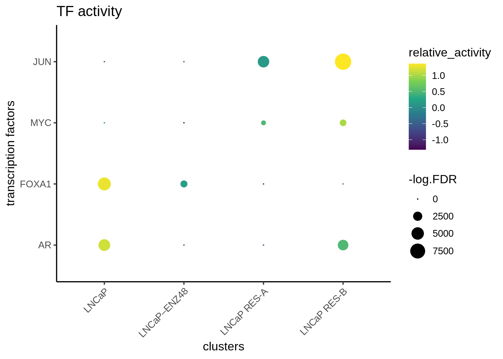

8 ArchR workflow and different weight methods
In this chapter, we illustrate the epiregulon workflow starting from an ArchR project and compare the different weight estimation methods.
The dataset consists of unpaired scATACseq/scRNAseq of parental LNCaP cells treated with DMSO, Enzalutamide and Enza resistant cells. The dataset was taken from Taavitsainen et al GSE168667 and GSE168668.
8.1 Prepare data
Please refer to the full ArchR manual for instructions
Before running Epiregulon, the following analyses need to be completed:
- Obtain a peak matrix on scATACseq by using addGroupCoverages > addReproduciblePeakSet > addPeakMatrix. See chapter 10 from ArchR manual
- RNA-seq integration.
- Perform dimensionality reduction from with either single modalities or joint scRNAseq and scATACseq using addCombinedDims
8.2 Load ArchR project
The data processed in ArchR is available at as compressed file containing ArchR project.
library(ArchR)
temp_path <- tempdir()
download.file("http://research-pub.gene.com/oncbx/yaox/Epiregulon/GSE168667.tar.gz",
file.path(temp_path, "GSE168667.tar.gz"))
untar(tarfile=file.path(temp_path, "GSE168667.tar.gz"), exdir = temp_path)
archR_project_path <- file.path(temp_path, "multiome")
proj <- loadArchRProject(path = archR_project_path, showLogo = FALSE)We will use the joint reducedDims - “LSI_Combined” and joint embeddings - “UMAP_Combined”
## LSI1 LSI2 LSI3 LSI4
## SRR13927735#TTATGTCTCCAGGTAT-1 -2.713935 -0.3677949 -0.4484238 -0.30645138
## SRR13927735#TATTGCTCATCAGAAA-1 -2.642781 -0.2767556 -0.9142714 -0.19675812
## SRR13927735#TTCGATTGTAGGGTTG-1 -2.322865 -0.1543080 -1.4106049 -0.08891276
## SRR13927735#CATTCATTCGGATGTT-1 -2.572976 -0.1917188 -1.0464294 -0.12660121
## SRR13927735#ACGTTAGGTCAACTGT-1 -2.478552 -0.1776639 -1.1037295 -0.22976613
## SRR13927735#AAATGCCCAGCAATGG-1 -2.595352 -0.3803464 -0.7770309 -0.52431765
## LSI5
## SRR13927735#TTATGTCTCCAGGTAT-1 -0.046845365
## SRR13927735#TATTGCTCATCAGAAA-1 0.075746940
## SRR13927735#TTCGATTGTAGGGTTG-1 0.019873276
## SRR13927735#CATTCATTCGGATGTT-1 0.009947438
## SRR13927735#ACGTTAGGTCAACTGT-1 -0.150097539
## SRR13927735#AAATGCCCAGCAATGG-1 -0.243074591## iLSI_Combined#UMAP_Dimension_1
## SRR13927735#TTATGTCTCCAGGTAT-1 -9.622903
## SRR13927735#TATTGCTCATCAGAAA-1 -9.360211
## SRR13927735#TTCGATTGTAGGGTTG-1 -8.617347
## SRR13927735#CATTCATTCGGATGTT-1 -9.285448
## SRR13927735#ACGTTAGGTCAACTGT-1 -8.809260
## SRR13927735#AAATGCCCAGCAATGG-1 -9.261216
## iLSI_Combined#UMAP_Dimension_2
## SRR13927735#TTATGTCTCCAGGTAT-1 -0.2908237
## SRR13927735#TATTGCTCATCAGAAA-1 -0.2892935
## SRR13927735#TTCGATTGTAGGGTTG-1 -0.2154103
## SRR13927735#CATTCATTCGGATGTT-1 -0.3267481
## SRR13927735#ACGTTAGGTCAACTGT-1 -0.2168703
## SRR13927735#AAATGCCCAGCAATGG-1 0.32003568.3 Retrieve matrices from ArchR project
Retrieve gene expression and peak matrix from the ArchR project
GeneExpressionMatrix <- getMatrixFromProject(
ArchRProj = proj,
useMatrix = "GeneIntegrationMatrix",
useSeqnames = NULL,
verbose = TRUE,
binarize = FALSE,
threads = 1,
logFile = "x"
)
PeakMatrix <- getMatrixFromProject(
ArchRProj = proj,
useMatrix = "PeakMatrix",
useSeqnames = NULL,
verbose = TRUE,
binarize = FALSE,
threads = 1,
logFile = "x"
)If we extract the gene expression from matrix, it will be in the form of RangedSummarizedExperiment. We can make use of ArchRMatrix2SCE to convert gene expression matrix to a SingleCellExperiment object. It’s also important to note that gene expression from ArchR is library size normalized (not logged).
library(epiregulon.archr)
GeneExpressionMatrix <- ArchRMatrix2SCE(GeneExpressionMatrix, rename = "normalizedCounts")
rownames(GeneExpressionMatrix) <- rowData(GeneExpressionMatrix)$nameWe rename the assay name of the PeakMatrix as counts.
Transfer embeddings from ArchR project to SingleCellExperiment for visualization
reducedDim(GeneExpressionMatrix, "UMAP_Combined") <- getEmbedding(ArchRProj = proj,
embedding = "UMAP_Combined",
returnDF = TRUE)[colnames(GeneExpressionMatrix),]
# add cell label
GeneExpressionMatrix$label <- GeneExpressionMatrix$Cells
GeneExpressionMatrix$label[GeneExpressionMatrix$Treatment == "enzalutamide 48h"] <- "LNCaP–ENZ48"
GeneExpressionMatrix$label <- factor(GeneExpressionMatrix$label,
levels = c("LNCaP", "LNCaP–ENZ48", "LNCaP RES-A", "LNCaP RES-B"))Visualize singleCellExperiment by UMAP
scater::plotReducedDim(GeneExpressionMatrix,
dimred = "UMAP_Combined",
text_by = "label",
colour_by = "label")
8.4 Retrieve bulk TF ChIP-seq binding sites
First, we retrieve the information of TF binding sites collected from Cistrome and ENCODE ChIP-seq. Currently, human genomes hg19 and hg38 and mouse mm10 are available.
## GRangesList object of length 1558:
## $AEBP2
## GRanges object with 2700 ranges and 0 metadata columns:
## seqnames ranges strand
## <Rle> <IRanges> <Rle>
## [1] chr1 9792-10446 *
## [2] chr1 942105-942400 *
## [3] chr1 984486-984781 *
## [4] chr1 3068932-3069282 *
## [5] chr1 3069411-3069950 *
## ... ... ... ...
## [2696] chrY 8465261-8465730 *
## [2697] chrY 11721744-11722260 *
## [2698] chrY 11747448-11747964 *
## [2699] chrY 19302661-19303134 *
## [2700] chrY 19985662-19985982 *
## -------
## seqinfo: 25 sequences from an unspecified genome; no seqlengths
##
## ...
## <1557 more elements>8.5 Link ATAC-seq peaks to target genes
Next, we compute peak to gene correlations using the addPeak2GeneLinks function from the ArchR package. The user would need
to supply a path to an ArchR project already containing peak and gene matrices, as well as Latent semantic indexing (LSI) dimensionality reduction.
p2g <- calculateP2G(ArchR_path = archR_project_path,
useDim = "iLSI_Combined",
useMatrix = "GeneIntegrationMatrix",
threads = 1)## Using ArchR to compute peak to gene links...## DataFrame with 16883 rows and 8 columns
## idxATAC chr start end idxRNA target
## <integer> <factor> <integer> <integer> <integer> <character>
## 1 15 chr1 912762 913262 7 NOC2L
## 2 25 chr1 920261 920761 7 NOC2L
## 3 25 chr1 920261 920761 8 KLHL17
## 4 32 chr1 927728 928228 7 NOC2L
## 5 32 chr1 927728 928228 8 KLHL17
## ... ... ... ... ... ... ...
## 16879 210643 chrX 154542721 154543221 23496 CH17-340M24.3
## 16880 210643 chrX 154542721 154543221 23501 LAGE3
## 16881 210643 chrX 154542721 154543221 23506 IKBKG
## 16882 210643 chrX 154542721 154543221 23509 DKC1
## 16883 210665 chrX 154815200 154815700 23515 F8
## Correlation distance
## <numeric> <numeric>
## 1 0.543478 46297
## 2 0.602633 38798
## 3 0.597510 40076
## 4 0.660584 31331
## 5 0.532240 32609
## ... ... ...
## 16879 0.540888 114492
## 16880 0.708942 63714
## 16881 0.517261 1716
## 16882 0.557412 219771
## 16883 0.554537 2114908.6 Add TF motif binding to peaks
The next step is to add the TF motif binding information by overlapping the regions of the peak matrix with the bulk chip-seq database. The user can supply an ArchR project path and this function will retrieve the peak matrix, or a peakMatrix in the form of a Granges object or RangedSummarizedExperiment.
## Successfully loaded ArchRProject!## Computing overlap...## Success!8.7 Generate regulons
A long format data frame, representing the inferred regulons, is then generated. Three columns are important:
- transcription factors (tf)
- target genes (target)
- peak to gene correlation between tf and target gene (corr)
## DataFrame with 2612934 rows and 10 columns
## idxATAC chr start end idxRNA target corr
## <integer> <factor> <integer> <integer> <integer> <character> <numeric>
## 1 15 chr1 912762 913262 7 NOC2L 0.543478
## 2 15 chr1 912762 913262 7 NOC2L 0.543478
## 3 15 chr1 912762 913262 7 NOC2L 0.543478
## 4 15 chr1 912762 913262 7 NOC2L 0.543478
## 5 15 chr1 912762 913262 7 NOC2L 0.543478
## ... ... ... ... ... ... ... ...
## 2612930 210665 chrX 154815200 154815700 23515 F8 0.554537
## 2612931 210665 chrX 154815200 154815700 23515 F8 0.554537
## 2612932 210665 chrX 154815200 154815700 23515 F8 0.554537
## 2612933 210665 chrX 154815200 154815700 23515 F8 0.554537
## 2612934 210665 chrX 154815200 154815700 23515 F8 0.554537
## distance idxTF tf
## <numeric> <integer> <character>
## 1 46297 4 AGO1
## 2 46297 11 ARID4B
## 3 46297 12 ARID5B
## 4 46297 30 BCOR
## 5 46297 36 BRD4
## ... ... ... ...
## 2612930 211490 1146 NFRKB
## 2612931 211490 1175 POLR2H
## 2612932 211490 1273 ZBTB8A
## 2612933 211490 1456 ZNF589
## 2612934 211490 1457 ZNF5928.8 (Optional) Annotate with TF motifs
In this example, we will filter the regulon for the presence of transcription factor motifs in a peak (see Section @ref(motif_score)) and continue the workflow with the regulon.motif object. However, if the user prefers to retain all target genes, including REs without motifs, they may proceed with regulon.
## retrieving motif information from ArchR project8.9 Prune network
We will use pruneRegulon function to restict the downstream analysis to more reliable GRN connections. The pruned regulons can then be used to visualize differential networks for transcription factors of interest. See section @ref(diff_network) to learn more on the differential networks.
8.10 Add Weights
Before we calculate AR activity, we will first visualize its expression and show that enzalutamide does not decrease AR expression.
library(epiregulon.extra)
plotActivityDim(sce = GeneExpressionMatrix,
activity_matrix = assay(GeneExpressionMatrix),
tf = "AR",
dimtype = "UMAP_Combined",
label = "label",
point_size = 1,
legend.label = "gene expression")
Then we extract the chromVarMatrix from ArchR project and then visualize the chromatin accessibility at AR bound sites. We can see that 48 hour of enzalutamide treatment reduced chromatin accessibility at AR bound sites
chromVarMatrix <- getMatrixFromProject(
ArchRProj = proj,
useMatrix = "MotifMatrix",
useSeqnames = NULL,
verbose = TRUE,
binarize = FALSE,
threads = 1
)
plotActivityDim(sce = GeneExpressionMatrix,
activity_matrix = assay(chromVarMatrix, "z"),
tf = "AR_689",
dimtype = "UMAP_Combined",
label = "label",
point_size = 1,
legend.label = "chromVar")
Next, we are going to compare 3 different weight methods. In the first method, the wilcoxon test compares target gene expression in cells meeting both the TF expression and accessibility cutoffs vs cells failing either the TF expression or/and accessibility cutoffs. Next, we try out the correlation method which comes in two flavors. When tf_re.merge = FALSE, weight is computed on the correlation of target gene expression vs TF gene expression. When tf_re.merge = TRUE, weight is computed on the correlation of target gene expression vs the product of TF expression and chromatin accessibility at TF-bound regulatory elements.
regulon.w.wilcox <- addWeights(regulon = pruned.regulon,
expMatrix = GeneExpressionMatrix,
exp_assay = "normalizedCounts",
peakMatrix = PeakMatrix,
peak_assay = "counts",
clusters = GeneExpressionMatrix$label,
method = "wilcoxon")## adding weights using wilcoxon...regulon.w.corr <- addWeights(regulon = pruned.regulon,
expMatrix = GeneExpressionMatrix,
exp_assay = "normalizedCounts",
peakMatrix = PeakMatrix,
peak_assay = "counts",
clusters = GeneExpressionMatrix$label,
method = "corr")## adding weights using corr...## calculating average expression across clusters...## computing weights...regulon.w.corr.re <- addWeights(regulon = pruned.regulon,
expMatrix = GeneExpressionMatrix,
exp_assay = "normalizedCounts",
peakMatrix = PeakMatrix,
peak_assay = "counts",
clusters = GeneExpressionMatrix$label,
method = "corr",
tf_re.merge = TRUE)## adding weights using corr...## calculating average expression across clusters...## computing weights...8.11 Calculate TF activity
Finally, the activities for a specific TF in each cell are computed by averaging the weighted expressions of target genes linked to the TF. \[y=\frac{1}{n}\sum_{i=1}^{n} x_i * weight_i\] where \(y\) is the activity of a TF for a cell \(n\) is the total number of targets for a TF \(x_i\) is the log count expression of target i where i in {1,2,…,n} \(weight_i\) is the weight of TF and target i
We calculate three different activities corresponding to the different weighted regulons
score.combine.wilcox <- calculateActivity(expMatrix = GeneExpressionMatrix,
exp_assay = "normalizedCounts",
regulon = regulon.w.wilcox,
normalize = TRUE,
mode = "weight",
method = "weightedMean")## Warning in calculateActivity(expMatrix = GeneExpressionMatrix, exp_assay =
## "normalizedCounts", : Argument 'method' to calculateActivity was deprecated as
## of epiregulon version 2.0.0## calculating TF activity from regulon using weightedMean## Warning in calculateActivity(expMatrix = GeneExpressionMatrix, exp_assay = "normalizedCounts", : The weight column contains multiple subcolumns but no cluster information was provided.
## Using first column to compute activity...## aggregating regulons...## creating weight matrix...## calculating activity scores...## normalize by mean...## normalize by the number of targets...score.combine.corr <- calculateActivity(expMatrix = GeneExpressionMatrix,
exp_assay = "normalizedCounts",
regulon = regulon.w.corr,
normalize = TRUE,
mode = "weight",
method = "weightedMean")## Warning in calculateActivity(expMatrix = GeneExpressionMatrix, exp_assay =
## "normalizedCounts", : Argument 'method' to calculateActivity was deprecated as
## of epiregulon version 2.0.0## calculating TF activity from regulon using weightedMean## aggregating regulons...## creating weight matrix...## calculating activity scores...## normalize by mean...## normalize by the number of targets...score.combine.corr.re <- calculateActivity(expMatrix = GeneExpressionMatrix,
exp_assay = "normalizedCounts",
regulon = regulon.w.corr.re,
normalize = TRUE,
mode = "weight",
method = "weightedMean")## Warning in calculateActivity(expMatrix = GeneExpressionMatrix, exp_assay =
## "normalizedCounts", : Argument 'method' to calculateActivity was deprecated as
## of epiregulon version 2.0.0## calculating TF activity from regulon using weightedMean## aggregating regulons...## creating weight matrix...## calculating activity scores...## normalize by mean...## normalize by the number of targets...We visualize the different activities side by side.
library(epiregulon.extra)
plotActivityViolin(activity_matrix = score.combine.wilcox,
tf = c( "AR"),
clusters = GeneExpressionMatrix$label) + ggtitle ("AR activity by wilcoxon")
plotActivityViolin(activity_matrix = score.combine.corr,
tf = c( "AR"),
clusters = GeneExpressionMatrix$label) + ggtitle ("AR activity by corr TF vs TG")
plotActivityViolin(activity_matrix = score.combine.corr.re,
tf = c( "AR"),
clusters = GeneExpressionMatrix$label) + ggtitle ("AR activity by corr TF*RE vs TG")
In this case, activity calculated from correlation based on TF and TG expression is clearly wrong because we see increased AR activity after Enzalutamide treatment despite it being an AR antagonist. Therefore, for drug treatment which often decouples TF gene expression and its activity, it is important to take into consideration both TF gene expression and RE chromatin accessibility; the latter may be a better indicator of TF function if the TF has an effect on the chromatin accessibility. In this case, the recommended methods are either wilcox or corr with tf_re.merge = TRUE.
The astute users could however detect a difference in the prediction of the AR activity in the resistant clones “RES-A” and “RES-B” with respect to the parental “LNCaP” between the two methods. For example, the corr with tf_re.merge = TRUE shows increased AR activity in “RES-B” compared to “LNCaP” because “RES-B” shows increased AR expression. In contrast, the wilcoxon method did not predict an increase in AR activity in “RES-B” because “RES-B” still shows reduced chromatin accessibility compared to “LNCaP”. Since wilcoxon takes into account the co-occurrence of both TF gene expression and RE chromatin accessibility, this method does not predict an overall increase in AR activity.
In the absence of the ground truth, it is difficult to judge which method is superior. Therefore, it is always crucial to validate key findings with additional empirical evidence. The most important disclaimer we wish to make is that all predictions by epiregulon should be robustly tested experimentally.
8.12 Perform differential activity
For the remaining steps, we continue with activity derived from the wilcoxon method.
markers <- findDifferentialActivity(activity_matrix = score.combine.wilcox,
clusters = GeneExpressionMatrix$label,
pval.type = "some",
direction = "any",
test.type = "t",
logvalues = FALSE )
markers## List of length 4
## names(4): LNCaP LNCaP–ENZ48 LNCaP RES-A LNCaP RES-BTake the top differential TFs. Summary represents comparison of cells in the indicated class vs all the remaining cells.
## Using a cutoff of 0.046 for class LNCaP for direction equal to any## Using a cutoff of 0.031 for class LNCaP–ENZ48 for direction equal to any## Using a cutoff of 0.04 for class LNCaP RES-A for direction equal to any## Using a cutoff of 0.04 for class LNCaP RES-B for direction equal to any## p.value FDR summary.diff class tf
## 1 0 0 0.06499576 LNCaP HES4
## 3 0 0 0.05017633 LNCaP SPDEF
## 11 0 0 0.05137746 LNCaP–ENZ48 HES4
## 31 0 0 -0.03602301 LNCaP–ENZ48 NR2F6
## 12 0 0 0.07346485 LNCaP RES-A ATF5
## 2 0 0 -0.04162267 LNCaP RES-A ETV1
## 21 0 0 0.04793834 LNCaP RES-B JUN
## 32 0 0 0.04482560 LNCaP RES-B NR2F28.13 Visualize the results
First visualize the known differential TFs by bubble plot
plotBubble(activity_matrix = score.combine.wilcox,
tf = c("AR","FOXA1", "MYC","JUN"),
pval.type = "some",
direction = "up",
clusters = GeneExpressionMatrix$label,
logvalues = FALSE)
Then visualize the most differential TFs by clusters
plotBubble(activity_matrix = score.combine.wilcox,
tf = unique(markers.sig$tf),
pval.type = "some",
direction = "any",
clusters = GeneExpressionMatrix$label,
logvalues = FALSE)
Visualize the known differential TFs by UMAP
plotActivityDim(sce = GeneExpressionMatrix,
activity_matrix = score.combine.wilcox,
tf = c( "AR", "FOXA1", "MYC", "JUN"),
dimtype = "UMAP_Combined",
label = "label",
point_size = 1,
ncol = 2,
nrow = 2)
Visualize the newly discovered differential TFs by UMAP
plotActivityDim(sce = GeneExpressionMatrix,
activity_matrix = score.combine.wilcox,
tf = markers.sig$tf[1:4],
dimtype = "UMAP_Combined",
label = "label",
point_size = 1,
ncol = 2,
nrow = 2)
Visualize regulons by heatmap
rowData(GeneExpressionMatrix) <- NULL
plotHeatmapRegulon(sce=GeneExpressionMatrix,
tfs= c( "AR", "FOXA1", "MYC", "JUN"),
regulon=regulon.w.wilcox,
regulon_cutoff=0.1,
downsample=1000,
cell_attributes="label",
col_gap="label",
exprs_values="normalizedCounts",
name="regulon heatmap",
column_title_rot = 45)
plotHeatmapActivity(activity=score.combine.wilcox,
sce=GeneExpressionMatrix,
tfs=rownames(score.combine.wilcox),
downsample=1000,
cell_attributes="label",
col_gap="label",
name = "transcription factor activity",
column_title_rot = 45)
8.14 Geneset enrichment
Sometimes we are interested to know what pathways are enriched in the regulon of a particular TF. We can perform geneset enrichment using the enricher function from clusterProfiler.
#retrieve genesets
H <- EnrichmentBrowser::getGenesets(org = "hsa",
db = "msigdb",
cat = "H",
gene.id.type = "SYMBOL",
cache = FALSE)
C6 <- EnrichmentBrowser::getGenesets(org = "hsa",
db = "msigdb",
cat = "C6",
gene.id.type = "SYMBOL",
cache = FALSE)
#combine genesets and convert genesets to be compatible with enricher
gs <- c(H,C6)
gs.list <- do.call(rbind,lapply(names(gs),
function(x) {data.frame(gs=x, genes=gs[[x]])}))
enrichresults <- regulonEnrich(TF = c("AR", "FOXA1", "MYC", "JUN"),
regulon = regulon.w.wilcox,
weight = "weight",
weight_cutoff = 0,
genesets = gs.list)## AR## FOXA1## MYC## JUN
We can visualize the genesets of known factors as a network
plotGseaNetwork(tf = names(enrichresults),
enrichresults = enrichresults,
p.adj_cutoff = 0.1,
ntop_pathways = 10) We can visualize the genesets of differential factors as a network
We can visualize the genesets of differential factors as a network
enrichresults <- regulonEnrich(TF = markers.sig$tf,
regulon = regulon.w.wilcox,
weight = "weight",
weight_cutoff = 0,
genesets = gs.list)## HES4## SPDEF## HES4## NR2F6## ATF5## ETV1## JUN## NR2F2plotGseaNetwork(tf = names(enrichresults),
enrichresults = enrichresults,
p.adj_cutoff = 0.1,
ntop_pathways = 10)
8.15 Differential network analysis {diff_network}
In addition to looking at the summed TF activity, a second approach to investigate differential TF activity is to compare and contrast target genes or network topology. In this example, we know that AR is downregulated in the Enzalutamide treated cells compared to parental LNCaP.
plotDiffNetwork(regulon.w.wilcox,
cutoff = 0,
tf = c("AR"),
weight = "weight",
clusters = c("LNCaP","LNCaP–ENZ48"),
layout = "stress")## Building graph using weight as edge weights
We perform edge subtracted graph between two conditions and rank TFs by degree centrality. In this example, positive centrality indicates higher activity in parental LNCaP and negative centrality indicates higher activity in Enzalutamide treated cells.
# construct a graph of the parental and enzalutamide treated cells respectively
LNCaP_network <- buildGraph(regulon.w.wilcox, weights = "weight", cluster="LNCaP")## Building graph using weight as edge weights## Building graph using weight as edge weights# construct a difference graph
diff_graph <- buildDiffGraph(LNCaP_network, ENZ_network, abs_diff = FALSE)
diff_graph <- addCentrality(diff_graph)
diff_graph <- normalizeCentrality(diff_graph)
rank_table <- rankTfs(diff_graph)
library(ggplot2)
ggplot(rank_table, aes(x = rank, y = centrality)) +
geom_point() +
ggrepel::geom_text_repel(data = rbind(head(rank_table,5),
tail(rank_table,5)),
aes(label = tf),
nudge_x = 0, nudge_y = 0, box.padding = 0.5) +
theme_classic() + ggtitle ("differential TFs (LNCaP-ENZ) ranked by degree centrality")
Sometimes, we are interested to identify interaction partners of the TFs of interest. This can be achieved by comparing the overlap of the targets genes for all the TFs and identify the most similar TFs by Jaccard similarity. To illustrate this function, we take a look at the top most similar 20 TFs to AR.
library(igraph)
diff_graph_filter <- subgraph.edges(diff_graph,
E(diff_graph)[E(diff_graph)$weight>0],
del=TRUE)
# compute a similarity matrix of all TFs
similarity_score <- calculateJaccardSimilarity(diff_graph_filter)
# Focus on AR
similarity_score_AR <- similarity_score[, "AR"]
similarity_df <- data.frame(similarity = head(sort(similarity_score_AR,
decreasing = TRUE),20),
TF = names(head(sort(similarity_score_AR,
decreasing = TRUE),20)))
similarity_df$TF <- factor(similarity_df$TF,
levels = rev(unique(similarity_df$TF)))
# plot top TFs most similar to SPI1
topTFplot <- ggplot(similarity_df, aes(x=TF, y=similarity)) +
geom_bar(stat="identity") +
coord_flip() +
ggtitle("AR similarity") +
theme_classic()
print(topTFplot)
In order to convince ourselves that our differential network is statistically significant, we permute the edges and obtain a background graph from averaging many iterations. Here, we plot the differential network graph subtracted by permuted graphs.
# create a permuted graph by rewiring the edges 100 times
permute_matrix <- permuteGraph(diff_graph_filter, "AR", 100, p=1)
permute_matrix <- permute_matrix[names(similarity_score_AR),]
diff_matrix <- similarity_score_AR-rowMeans(permute_matrix)
diff_matrix_df <- data.frame(similarity = head(sort(diff_matrix,
decreasing = TRUE),20),
TF = names(head(sort(diff_matrix,
decreasing = TRUE),20)))
diff_matrix_df$TF <- factor(diff_matrix_df$TF, levels = rev(unique(diff_matrix_df$TF)))
# plot top TFs most similar to AR
topTFplot <- ggplot(diff_matrix_df, aes(x=TF, y=similarity)) +
geom_bar(stat="identity") +
coord_flip() +
ggtitle("background subtracted AR similarity ") +
theme_classic()
print(topTFplot)
# obtain empirical p-values
p_matrix <- rowMeans(apply(permute_matrix, 2, function(x) {x > similarity_score_AR}))
p_matrix[names(head(sort(diff_matrix,decreasing = TRUE),20))]## JUND MYC FOXA1 HOXB13 NFIC CEBPB MAZ XBP1 CEBPG GATA2 REST
## 0.00 0.00 0.00 0.01 0.01 0.00 0.00 0.01 0.00 0.00 0.01
## CTCF FOXP1 NFIX ATF4 ZNF148 NFIB EHF ETV1 YY1
## 0.00 0.01 0.00 0.03 0.02 0.00 0.00 0.00 0.00